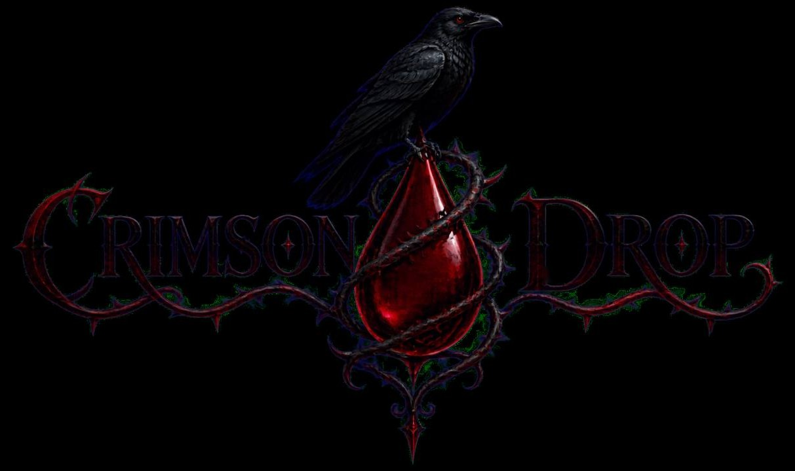

Crimson Drop gothic films & dark ambience
Short films and hour-long ambience made with AI: vampires, haunted manors, witches and the seasons in between.
- Vampires and their castles
- Haunted Victorian manors
- Witches and covens
- 80s nostalgia
- Autumn, Halloween, Christmas
For relaxing, reading, studying, sleeping, or simply escaping into another world.

Latest from the channel
Winter in the haunted house

Two hours of holiday music and candlelit rooms in a Victorian house that never quite emptied.
Play the ambience 2:03:50October at the old manor

One hour of gothic music and dark ambience, with a fire lit for whoever is still awake.
Play the ambience 1:05:33The vampire’s table

A family of the undead gathers for a cozy dinner in a haunted Victorian mansion.
Play the film 2:54Witches of the old world

A queen, a betrayal and a forest that remembers. Gothic love in two minutes.
Play the film 2:05Short films 21
Two to five minutes each. Each one is made to feel like a fragment of a lost memory, an echo from another realm.
The archive
Every film on the channel, newest first. Choose one to play it here.
Long ambience 3
-
A Haunted Victorian HolidayChristmas2:03:50
-
Halloween Eve AmbianceHalloween1:10:40

-
Halloween at the Old Victorian ManorHalloween1:05:33
Short films 22
-
The Snow Queen & KrampusWinter fantasy1:43

-
The Queen Who Became a WitchWitches2:05
-
Haunted New OrleansVampires & ghosts2:26

-
Celestial Beings Watching EarthCosmic2:36

-
The Vampires of Dracula’s CastleVampires2:34

-
Dinner with the UndeadHalloween2:32

-
The Real Housewives of TransylvaniaVampires1:35

-
The Vampire Ball at VersaillesVampires2:52

-
Bound by ThreadGothic romance1:46

-
Halloween Slasher Kings80s horror3:01

-
The Lost Boys Reimagined80s nostalgia3:00

-
A Cozy Halloween DayAutumn3:15

-
A Cozy Autumn Day in the English CountrysideAutumn3:27

-
Witches of the Rose MoonWitches2:59

-
The Vampire Family ReunionVampires2:54
-
Waiting for Your Fisherman to Come HomeRomance1:59

-
The Last Days of SummerAutumn3:35

-
Louisiana Swamp WitchWitches3:04

-
Witch Coven in BudapestWitches3:38

-
Colorado Hotel Awakens After DarkHaunted places3:03

-
The Forgotten CircusHaunted places5:12

-
Ghostly DanceGhosts3:15

Enter slowly.
The story has already begun.
Fragments of a lost memory
Beyond this doorway lie haunted forests, fading romances, autumn nights, winter magic, and worlds shaped by shadow. Every film is full of dark elegance, melancholic beauty and hypnotic atmosphere.
Through the year
Candlelit fall evenings, nostalgic October nights, eerie Halloween scenes and magical winter landscapes. Long ambience for every season, made to stay on while you read, study or sleep.
Stay for the night.
New films arrive through the year, with long ambience for every season. Subscribe, and the next one will find you.
Subscribe on YouTube